Theoretical ML/DL · Interpretability · Information Theory
I'm a final-year CS undergrad at VIT Vellore and an incoming MSc student at the University of Oxford (Advanced Computer Science, Oct 2026). My research sits at the intersection of theoretical ML/DL, mechanistic interpretability, and information theory - broadly, I'm interested in understanding mechanisms underlying learning and developing more capable/reliable intelligence.
Currently I'm working with the Torr Vision Group and OATML groups at Oxford, headed by Prof. Philip Torr and Prof. Yarin Gal respectively. I'm also working with Prof. Ravid Shwartz-Ziv at NYU. I'm always happy to connect, please feel free to reach out!
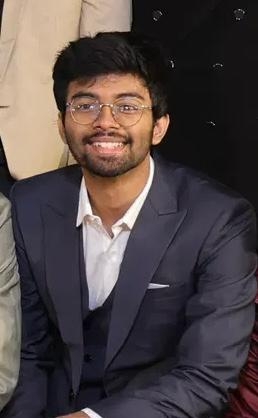
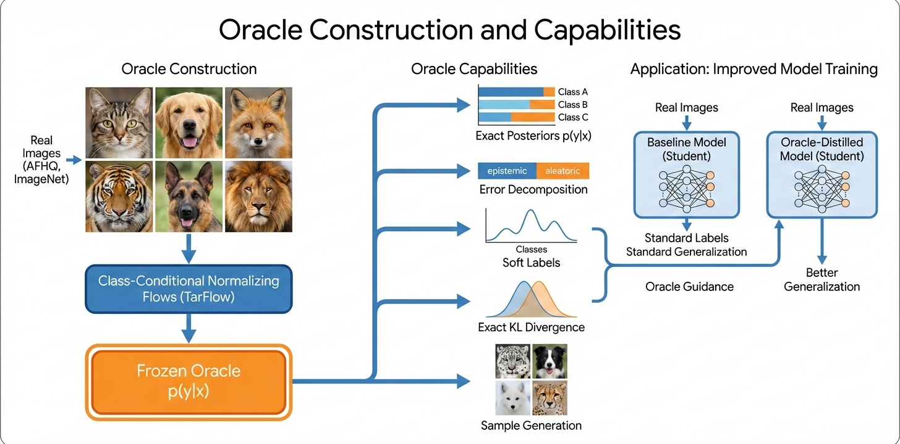
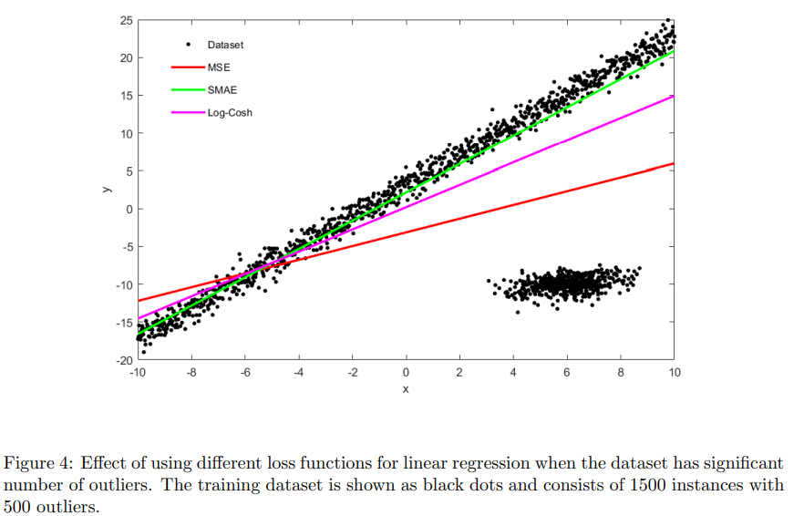
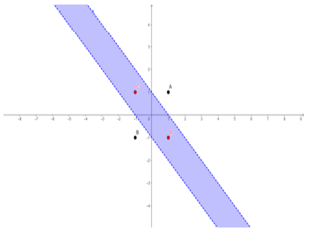
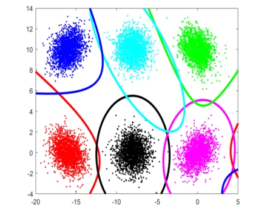
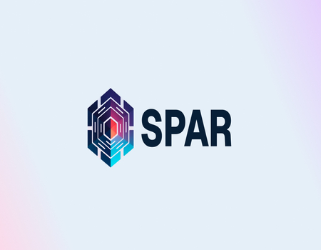
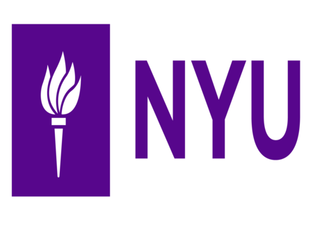
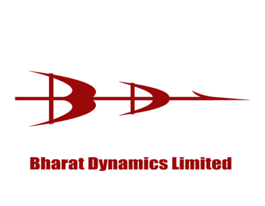
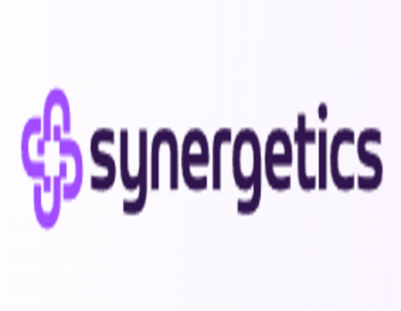
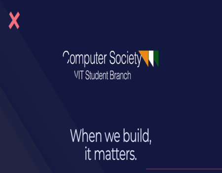
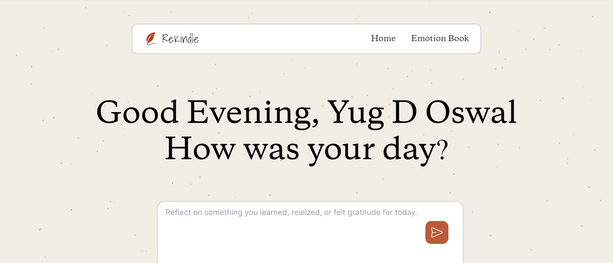